掌中宝交易 OMS
面向淘宝 / 天猫中小商家的轻量化订单管理 SaaS，帮助商家在千牛生态内完成订单同步、订单处理、打单发货、拆合单、物流回传、售后协同与自动化履约，提升高频订单履约效率，并形成从免费获客到分层付费的商业化闭环。
60W+用户规模
7.3W+付费用户
65%续费率

面向淘宝 / 天猫中小商家的轻量化订单管理 SaaS，帮助商家在千牛生态内完成订单同步、订单处理、打单发货、拆合单、物流回传、售后协同与自动化履约，提升高频订单履约效率，并形成从免费获客到分层付费的商业化闭环。

01 / Product Overview
多数竞品 ERP / 订单管理 OMS 产品倾向 PC 端、功能完整，但系统较重、学习和实施成本高，更适合中大型商家；平台基础工具上手快，但更多解决单点操作，难以支撑多店铺、多包裹、多物流、拆合单、售后退款等复杂场景。
基于这一判断，掌中宝交易没有选择做“大而全”的重型 ERP，而是定位为面向中小商家的轻量化 OMS。产品以订单履约主链路为切入点，优先解决商家每天最高频的看单、找单、核单、打单、发货和售后处理问题，再逐步延展到复杂履约、自动化能力和差异化付费场景。
掌中宝交易的核心价值是：在低学习成本的前提下，帮助中小商家更高效、更稳定地完成订单处理。
它不是单纯的订单列表工具，而是围绕履约链路建立的一套轻量订单管理系统，将平台订单、交易主订单 / 子订单、拣货单、发货单、快递单、售后单、退款单与库存流水串联起来，帮助商家在统一工作流中完成订单处理、发货履约、售后协同与数据回流，并逐步形成用户增长、付费转化和续费留存的商业闭环。
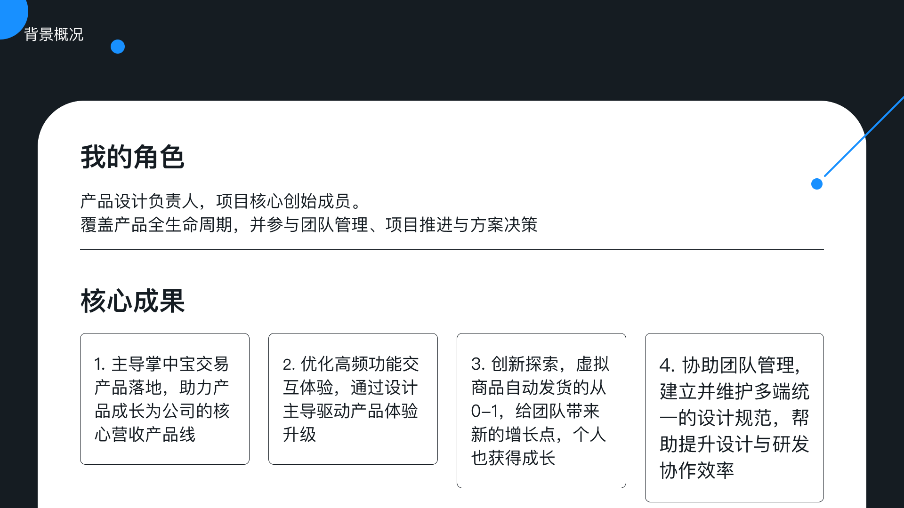
02 / Ownership
我在项目中承担产品负责人角色，是掌中宝交易的核心创始成员之一，覆盖从 0-1 到规模化增长的完整生命周期。
产品战略与定位：判断市场断层，定义“轻量化、高效率、移动优先”的产品战略，明确不与重 ERP 正面对抗，而是聚焦中小商家高频履约场景。
0-1 MVP 验证：主导基础订单管理能力上线，包括订单同步、订单列表、搜索筛选、状态管理、批量处理、打单发货与基础售后协同，并完成早期用户冷启动。
复杂业务系统设计：梳理订单状态机、单据流转关系、履约与售后分支，推动平台订单、OMS 主单、包裹单、拣货单、发货单、库存流水和退款单之间的业务关系清晰落地。
商业化与组织协同：设计免费版、黄金版、白金版功能分层，协调产品、设计、研发、客服、运营与平台接口资源，完成多版本并行推进、优先级决策和落地验收。
03 / Personas & Use Cases
新手 / 小商家：订单量不高，但缺少系统化订单处理经验，希望工具简单、好上手，能快速完成看单、打单、发货。核心诉求是低学习成本、快速处理、少出错。
中小规模商家：每天有稳定订单，需要批量处理、快速筛选、统一发货、售后协同，开始关注效率和人工成本。核心诉求是批量处理、快速找单、信息清晰、操作路径短。
多店铺 / 多品类商家：同时管理多个店铺或多个品类，涉及多包裹、多物流、预售现货、缺货、售后等场景。核心诉求是复杂订单规则、拆合单、状态同步和异常处理。
虚拟商品商家：售卖卡密、链接、教程资料、虚拟服务等商品，更关注付款后自动发货和内容准确送达。核心诉求是减少人工客服、避免漏发错发、提升买家体验。
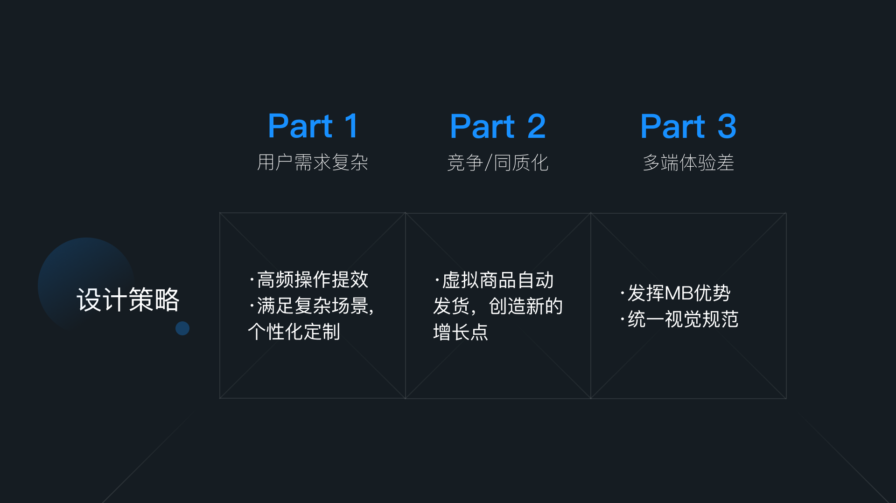
04 / Product Strategy
0-1 阶段：MVP 没有追求完整 OMS，而是围绕最核心的订单处理链路构建：订单同步、订单列表、搜索筛选、状态管理、批量处理、打单发货、物流回传和基础售后协同。早期目标不是“功能多”，而是验证商家是否会在日常经营中持续使用。
成长期：当产品完成基础可用后，增长重点从“功能可用”转向“使用效率”和“价值感知”。我重点优化搜索筛选、订单列表、批量操作、打单发货和拆合单能力，让商家日常处理订单更快、更稳、更少出错。
成熟期：随着平台免费能力增强、竞品同质化加剧，单纯打单发货能力很容易被价格战削弱。我将重点转向平台基础工具覆盖不足、但商家付费意愿明确的细分场景，例如虚拟商品自动发货、自动化规则、个性化配置等。
商业化：免费版降低试用门槛，黄金版面向有稳定订单规模、追求效率的商家，白金版面向高频使用和自动化需求强的商家。
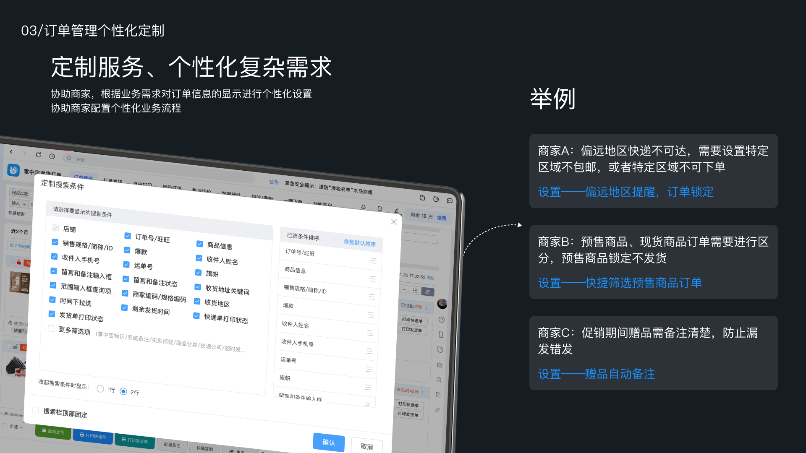
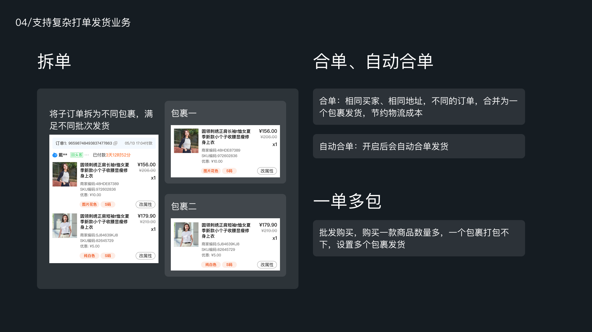
05 / System Design
掌中宝交易的核心不是页面，而是订单单据关系。平台交易订单是数据源头，掌中宝 OMS 交易主单承接商家处理视角，履约单 / 包裹单根据拆单、合单、物流规则生成，发货单 / 物流单关联电子面单、物流单号与发货状态，库存流水记录占用、扣减和回补，退款售后单承接仅退款、退货退款、换货等分支。
订单管理主线可以简化为：消费者下单 → 平台订单创建 → 掌中宝同步待付款订单 → 付款后进入待发货池 → 订单校验与拦截 → 拆合单与配仓 → 批量打单 → 获取电子面单 → 拣货 / 验货 / 复核 → 物流回传 → 平台状态更新 → 签收 / 交易成功 → 财务与数据看板沉淀。
我将售后、退款、退货入库和异常预警作为底部分支沉淀，不干扰履约主线。这样既能支持待付款、待发货、部分发货、已发货、售后、退款、关闭等状态分支，也能把拆单、合单、库存、物流、售后、财务等跨域关系串起来。

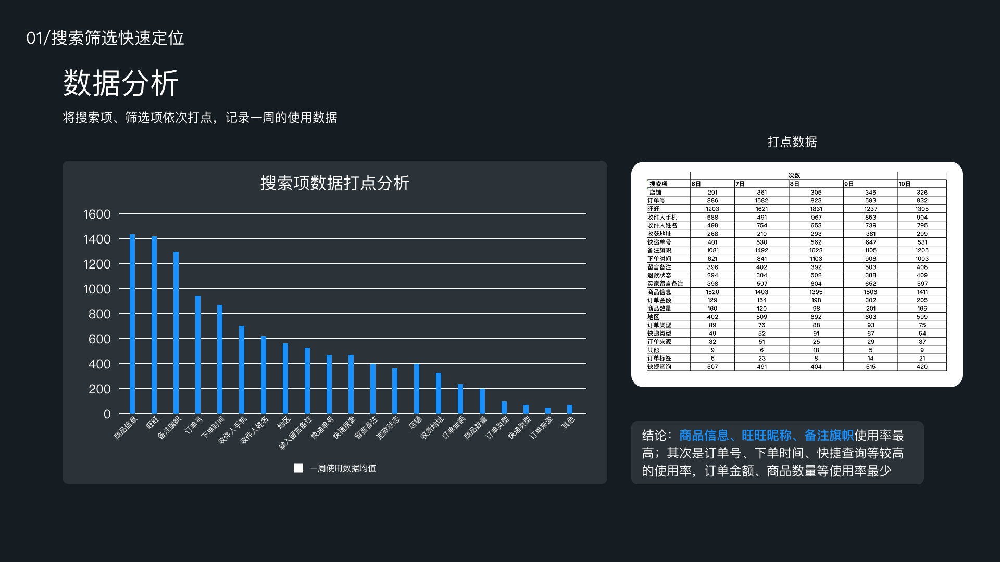

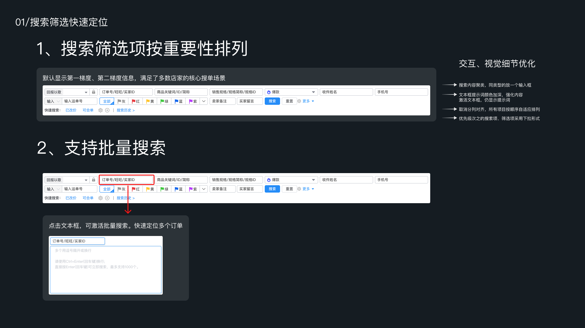
06 / Case Study 1
商家订单量增长后，“找单”成为高频但低效的动作。用户可能通过订单号、物流单号、买家昵称、商品 ID、商品关键词、收件人、手机号、备注、退款状态、下单时间、预售状态等多种条件找单。原有搜索筛选项分组不清晰，优先级不一致，导致商家定位订单效率低。
我通过用户问卷、旺旺语音访谈、客服反馈、数据打点和竞品分析，重新判断搜索筛选项的重要性。高频项前置，同类输入框合并，批量搜索支持客服、仓库、售后一次定位多个订单，快捷搜索沉淀催发订单、赠品订单、今日发货等高频业务场景，搜索历史减少重复配置筛选条件。
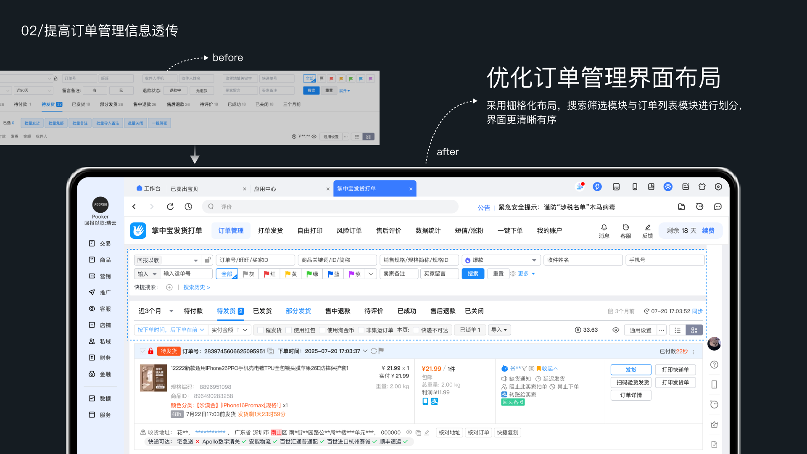
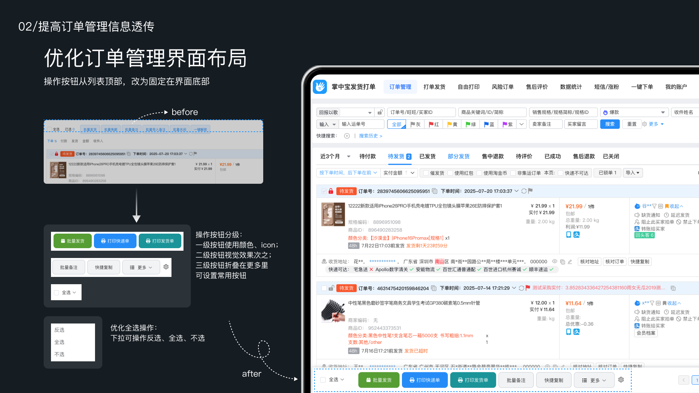
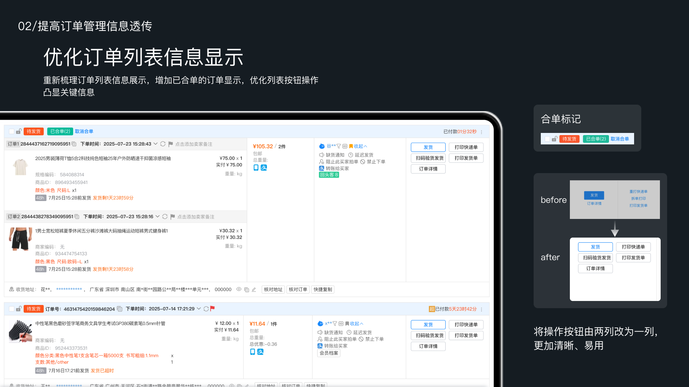
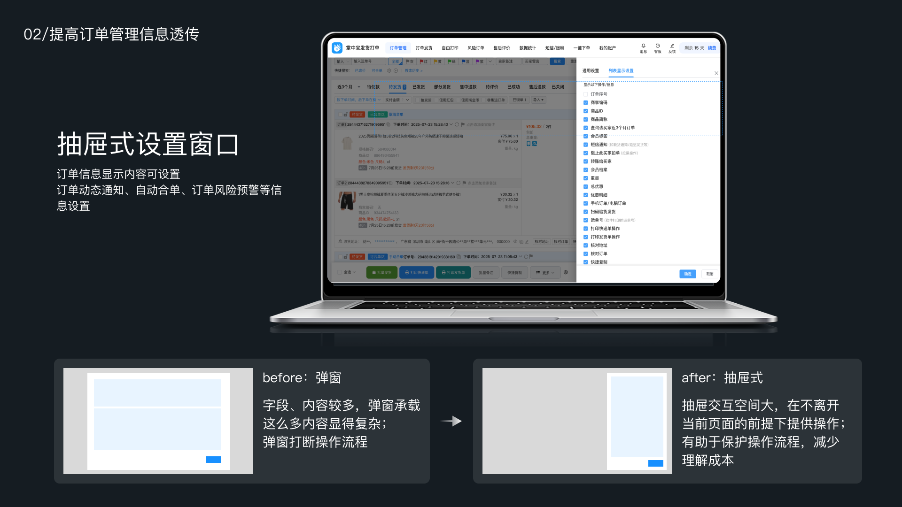
07 / Case Study 2
订单列表是商家处理订单的核心工作台。原有列表中信息分散，操作按钮在顶部或分布不稳定，商家需要频繁滚动、跳转或打开详情页才能判断订单是否可处理。
我将搜索筛选模块与订单列表模块分区，采用栅格化布局提升页面清晰度；重新梳理订单状态、商品信息、买家信息、物流信息、合单标记和异常提醒，让关键判断前置；将批量发货、打印快递单、打印发货单、批量备注、快捷复制等高频操作固定在界面底部，避免商家在长列表中来回查找按钮。
按钮按高频动作和次级动作分级，订单信息显示、自动合单、风险预警等配置改为抽屉式，在不打断当前页面的前提下提供设置能力。订单列表从“信息展示页”升级为“订单处理工作台”。
08 / Case Study 3
中小商家的订单并不总是“一单一包一物流”。常见复杂场景包括：同买家同地址多订单需要合并发货；一个订单包含多件商品，需要拆成多个包裹；预售商品与现货商品混在一个订单中；部分商品缺货，需要先发可发商品；售后退款可能发生在发货前、发货中或发货后。
如果系统只按平台订单处理，会导致发货、库存、物流和售后之间出现错配。我推动建立履约单 / 包裹单中间层，平台订单不直接等同于发货单，而是通过履约单承接拆合单结果。
系统支持相同买家、相同地址、同店铺订单合并为一个包裹发货，也支持多商品、多仓、预售现货混合、部分缺货等场景拆成多个包裹，配合库存 / WMS 和 TMS 完成库存校验、电子面单、物流回传和售后分支沉淀。
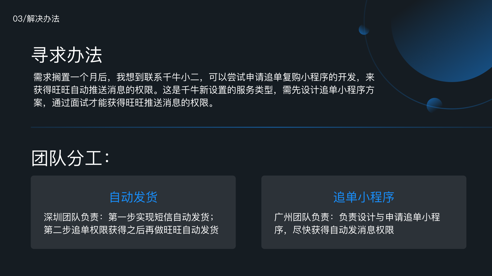
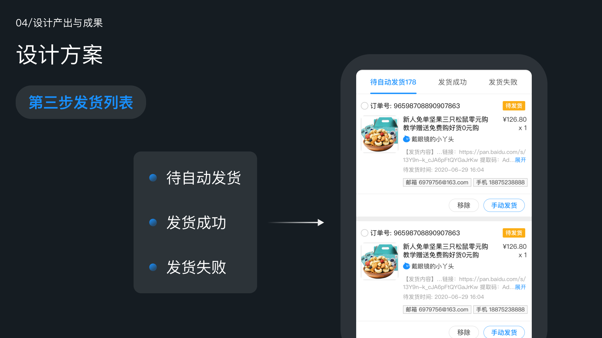
09 / Case Study 4
在平台基础工具增强、竞品能力趋同的阶段，传统订单管理能力面临免费化和同质化压力。继续做“别人也有的打单发货”很难形成长期竞争壁垒。
我通过商户群、客服反馈和业务观察，发现虚拟商品自动发货这一类被平台基础工具覆盖不足、但商家付费意愿明确的场景。目标用户是售卖卡密、链接、教程资料、虚拟服务、电子资料等商品的商家，他们最怕人工发送内容带来的漏发、错发、延迟发货和售后催促。
产品方案围绕商品绑定发货内容、订单支付后自动触发、发货内容校验与记录、异常兜底机制和订单状态联动展开。它对商家减少人工客服成本，对买家提升收货体验，也为产品形成平台基础能力之外的细分竞争优势。
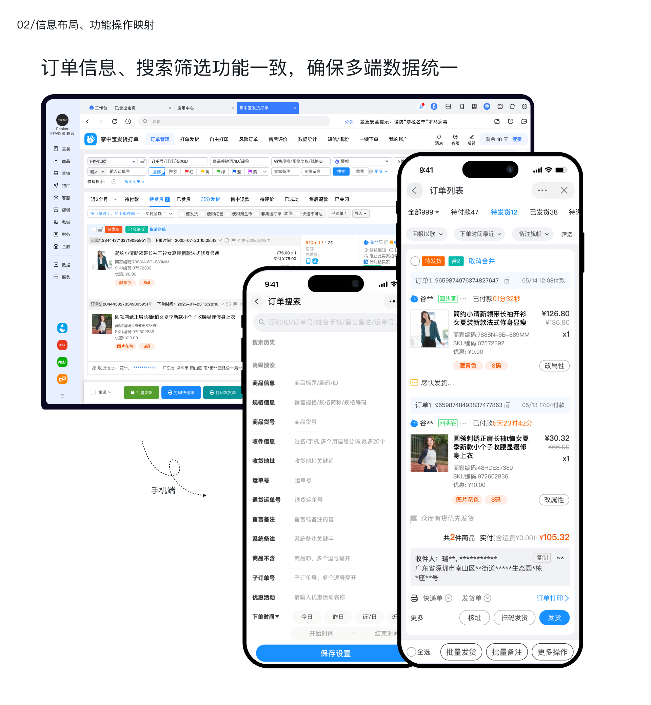
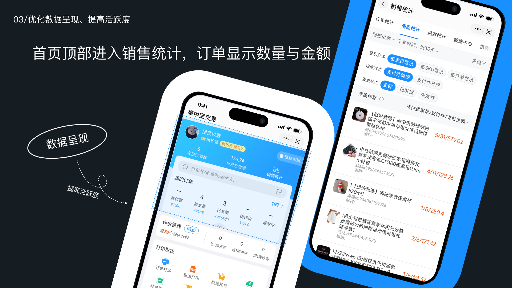
10 / Mobile & Multi-end
订单管理通常被认为是 PC 端高复杂度场景，但中小商家存在大量移动办公需求：客服临时查单、老板查看订单状态、仓库扫码发货、售后扫码退货、外出时处理紧急订单。
我的判断是：移动端不是 PC 的简单缩小版，而是掌中宝交易可以建立差异化体验的场景。因此我推动订单数据移动端重构，用更轻的信息层级展示关键订单状态、买家信息、商品信息、物流状态和异常提醒。
同时，扫码发货降低移动端输入成本，扫码退货让售后退货入库和核验更快捷；多端设计规范保证 PC、移动端和千牛场景下的体验感知一致，让商家在不同设备之间沿用同一套订单处理心智。
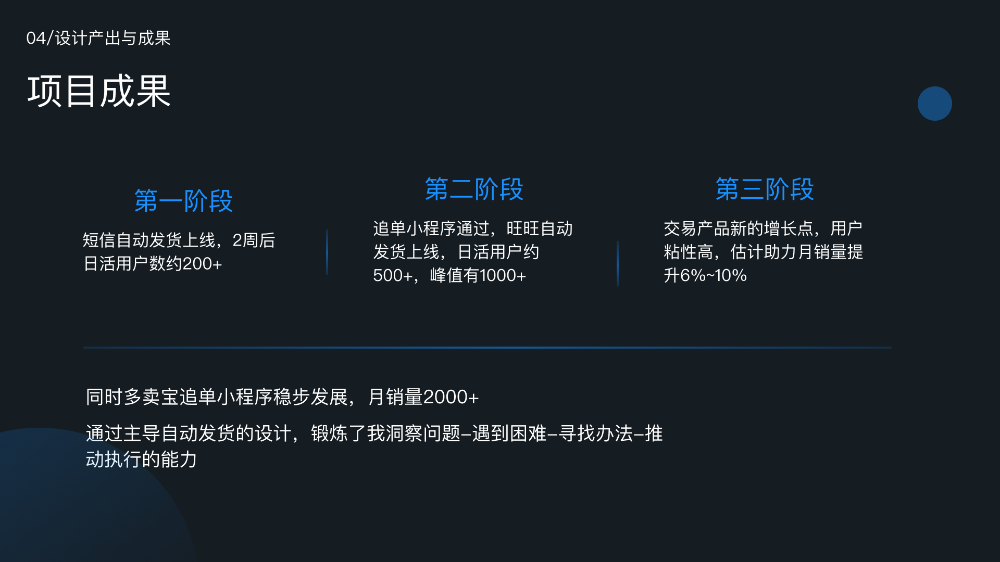
11 / Growth & Monetization
掌中宝交易的增长不是单纯依赖投放，而是围绕 AARRR 路径做产品化拆解：依托千牛服务市场入口和掌中宝商品已有用户基础完成拉新；新用户进入产品后，优先引导完成订单同步、订单筛选、打单发货等核心动作，让商家尽快感知产品价值。
留存来自订单履约、物流、售后和自动化处理的日常高频使用；变现来自那些能明确节省时间、减少人工、降低出错率的能力，包括批量处理、高阶筛选、打单发货、自动化能力和虚拟商品自动发货。
分层商业化不是按功能数量机械切分，而是按用户经营价值拆解付费点：免费版建立基础价值感，黄金版提升订单处理效率，白金版承接自动化、复杂履约和差异化能力。
12 / Impact & Reach
掌中宝交易最终实现 60W+ 用户、7.3W+ 付费用户、12% 付费转化率和 65% 续费率，并成为公司核心业务的重要组成部分，所负责产品线营收占公司核心业务约 30%。
从 0-1 搭建订单管理产品，验证高频履约刚需。
重构搜索筛选、订单列表、拆单、合单等核心链路。
付费转化提升约 10%，移动端与自动化能力强化粘性。
组织层面，我管理产品与设计团队，协调 10+ 研发资源推进复杂项目落地，建立多端设计规范和组件化协作方式，形成从业务定位、MVP、链路优化、增长、商业化到差异化机会挖掘的完整产品方法论。
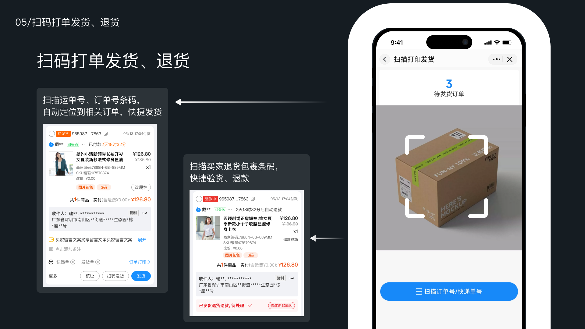
13 / Strategic Learnings
复杂 B 端产品要先抓主链路。OMS 的复杂度很高，但 0-1 阶段不能把所有复杂度一次性暴露给用户。我的策略是先抓订单履约主链路，再把售后、退款、库存、物流、财务等分支逐步纳入系统。
轻量化不等于能力浅。中小商家需要的是低学习成本，而不是低能力。掌中宝交易的核心挑战，是把复杂的订单履约能力隐藏在清晰的交互和稳定的流程背后。
数据、用户反馈和竞品分析要共同决策。搜索筛选改版不是单纯视觉优化，而是结合用户调研、客服反馈、打点数据和竞品对比后，对信息优先级和交互路径的重新设计。
平台免费化不是终点。当平台基础能力变强时，第三方工具不能继续停留在基础能力复制，而要寻找平台覆盖不足、用户付费意愿更强的细分场景，如虚拟商品自动发货和自动化履约。
掌中宝交易对我而言，不只是一次 OMS 产品建设经历，更是一次从业务定位、复杂系统抽象、体验优化、增长转化到商业化闭环的完整产品实践。